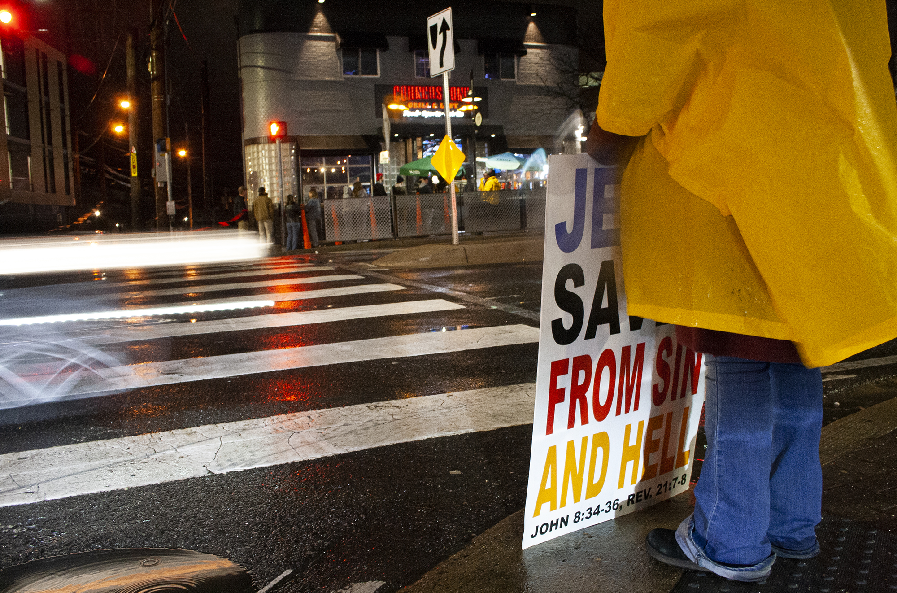

By: Ian Dalrymple
Dateline: College Park; April 25, 2023
A protestor stands across the street from Cornerstone Grill & Loft in College Park, MD. March 3, 2023
Some of the largest single-day protests in United States history have happened over the past few years. From the George Floyd Protests to the Women’s Marches, millions of Americans have been gathering to try to right the country’s wrongs. But how successful are protests, and does the size of the protest matter?
To answer those questions, it should be understood what a successful protest looks like. A successful protest is one that brings reform relevant to the issue being protested. And that reform should come in a timely manner.
For example, the 1963 March on Washington for Jobs and Freedom was a successful protest because it correlated with legislative reform that came in the following years.
President Lyndon B. Johnson signed into law the Civil Rights Act of 1964 prohibiting discrimination of race, color, religion, sex or national origin (“U.S. Department of Labor,” n.d.). He then followed that legislation with the Voting Rights Act of 1965, which prohibits discriminatory voting practices, essentially ending segregation (“National Archives,” n.d. b).
However, despite its immense success, the 1963 March on Washington wasn’t particularly populous. With approximately 250,000 people in the crowd, it ties the 2019 Climate Strike in New York City as only the 15th largest protest in U.S. history (“National Archives,” n.d. a; Laville & Watts, 2019).
Another protest that was successful in its own way was the 1995 Million Man March. With a crowd of around 870,000 people, it aimed to empower black men to improve their communities (Fletcher & Harris, 1995; Britannica, 2022). And although it may not have brought immediate legislative reform, it did bring immediate reform in the sense that within the next year, over 1.5 million black men registered to vote for the first time (Jones, 2008).
However, the largest and possibly most successful protest in United States history took place on April 22, 1970, the first Earth Day (NOAA, 2023). It was a teach-in protest involving 20 million citizens throughout the country, and it’s been credited as being the catalyst for the formation of two separate governmental agencies in December of that same year, the National Oceanic and Atmospheric Administration and the Environmental Protection Agency (NOAA, 2023). In fact, it took less than three months since Earth Day for President Nixon to submit plans to Congress for the creation of NOAA and the EPA later that year (Nixon, 2016).
But not all protests are successful. On the other side of the coin are large gatherings of people who don’t get the reform they desire. A gathering like the 2019 Climate Strike totaling 250,000 people in New York City, for example, was unsuccessful.
The 2019 Climate Strike in New York City was headed by the U.S. Youth Climate Strike Coalition, which demanded for national and international adherence to a Green New Deal that made plans to tackle climate change (Janfaza, 2019). However, the Green New Deal has been struck down twice in the Senate. It first failed to pass in March 2019, prior to the climate strike, and it again failed in August 2021, nearly two years after the strike (“Ranking Member Barrasso,” 2021).
Possibly the largest and most unsuccessful protests in American history, the Women’s Marches of 2017 and 2018 totaled over 3.2 million and 1.8 million people respectively (Bond, Chenoweth & Pressman, 2018). The marches had goals of reimagining democracy, instilling autonomy and ending white supremacy, but haven’t brought any significant reform since (“Women’s March,” n.d.). In fact, the most significant and relevant change that’s come since these marches has been the repeal of Roe v. Wade only five years later, which is arguably a step backwards, not reform.
With the context of successful and unsuccessful protests covered, it’s time to analyze the largest protests in American history. Below is a timeline of the top 20 largest protests, and beside it is a graph analyzing the relationship between the success and size of a protest.
Top 20 Largest Single-Day Protests in U.S. History
(Descending order):
- Earth Day Teach-in Protests | April 22, 1970
(~20,000,000 protestors)
- Women's March | Jan. 21, 2017
(~3,260,000 protestors)
- Women's March | Jan. 20, 2018
(~1,850,000 protestors)
- March for our Lives | March 24, 2018
(~1,380,000 protestors)
- Great American Boycott | May 1, 2006
(~1,000,000 protestors)
- March for Women's Lives | April 25, 2004
(~1,000,000 protestors)
- Anti-Nuclear Weapons March | June 12, 1982
(~1,000,000 protestors)
- Million Man March | Oct. 16, 1995
(~870,000 protestors)
- March on Washington for Lesbian, Gay and Bi Equal Rights
and Liberation | April 25, 1993
(~800,000 protestors)
- Million Mom March | May 14, 2000
(~750,000 protestors)
- March for Life | Jan. 25, 2013
(~650,000 protestors)
- George Floyd Protests | June 6, 2020
(~500,000 protestors)
- Moratorium to End the War in Vietnam | Nov. 15, 1969
(~500,000 protestors)
- March for Science | April 22, 2017
(~330,000 protestors)
- People's Climate March | Sept. 21, 2014
(~311,000 protestors)
- Million Woman March | Oct. 25, 1997
(~300,000 protestors)
- Tea Party Protests | April 15, 2009
(~300,000 protestors)
- Solidarity Day March | 1981, Sept. 19
(~260,000 protestors)
- New York City Climate Strike | 2019, Sept. 20
(~250,000 protestors)
- March on Washington for Jobs and Freedom | 1963, Aug. 28
(~250,000 protestors)